Fachoda-Complex
Fachoda-complex is a flight simulator/arcade game for Linux, tailored for small hardware configs.
It's free software so you can freely use, copy, modify and re-distribute it under the terms of the GPLv3.
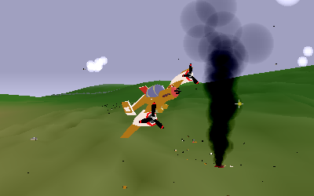
Just shoted down this guy
version 2.0 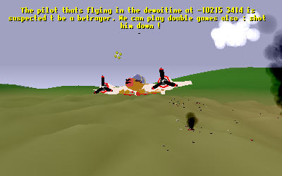 New missions appear regularly
version 2.0 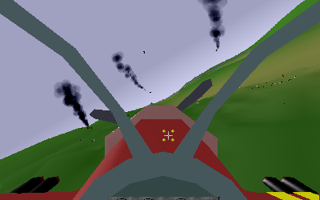 Mayhem right ahead!
version 2.0 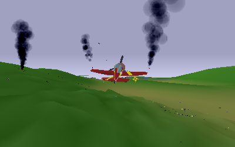 Let's join the party!
version 2.0 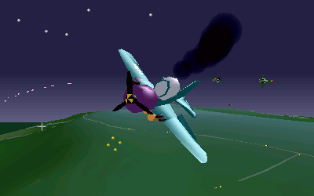 Some action by night
version 2.0 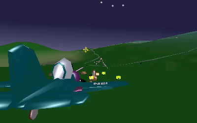 Gunning some ground target
version 2.0 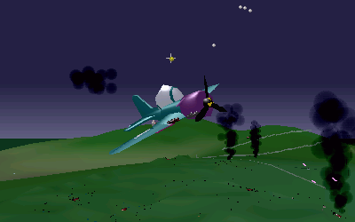 Ground dotted with crash debris
version 2.0 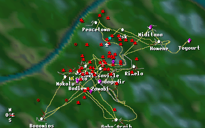 Ingame map
version 2.0 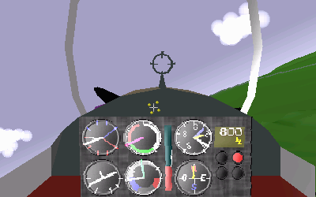 Instrument panel
version 2.0 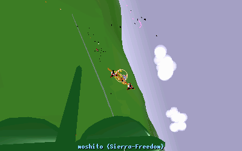 There's a big one in my 6!
version 2.0 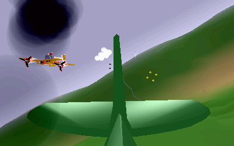 Got shot badly
version 2.0 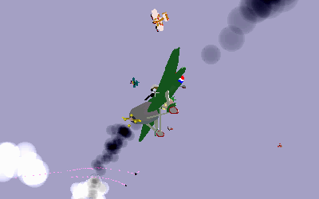 Going to meet the ground soon
version 2.0 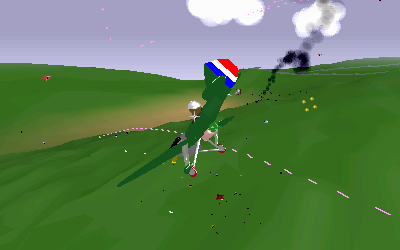 I shall be back!
version 2.0
version 2.0 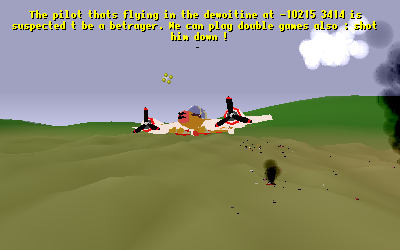 New missions appear regularly
version 2.0 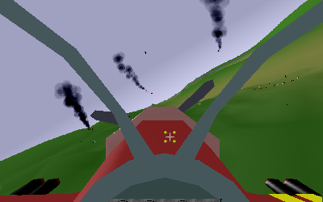 Mayhem right ahead!
version 2.0 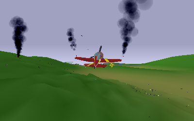 Let's join the party!
version 2.0 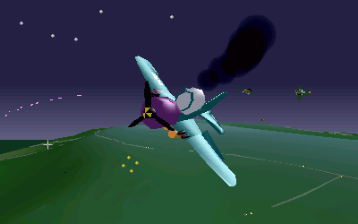 Some action by night
version 2.0 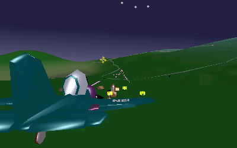 Gunning some ground target
version 2.0 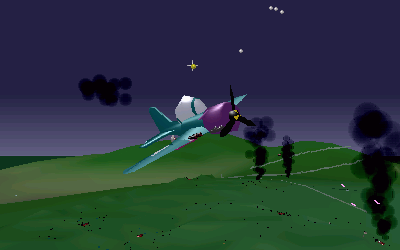 Ground dotted with crash debris
version 2.0 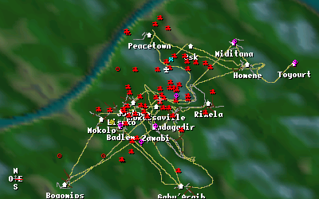 Ingame map
version 2.0 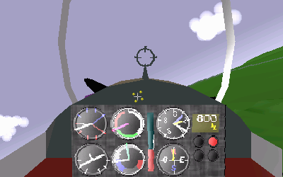 Instrument panel
version 2.0 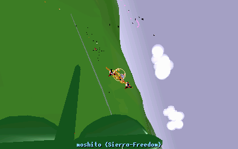 There's a big one in my 6!
version 2.0 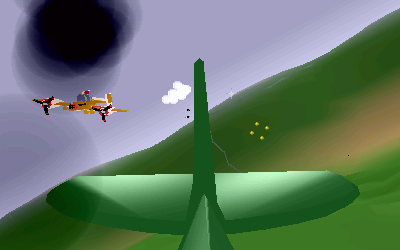 Got shot badly
version 2.0 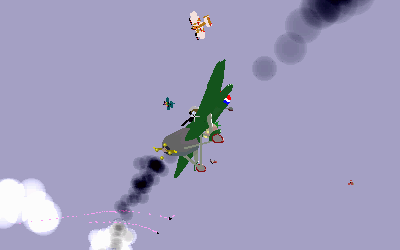 Going to meet the ground soon
version 2.0 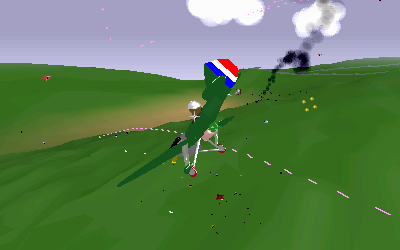 I shall be back!
version 2.0